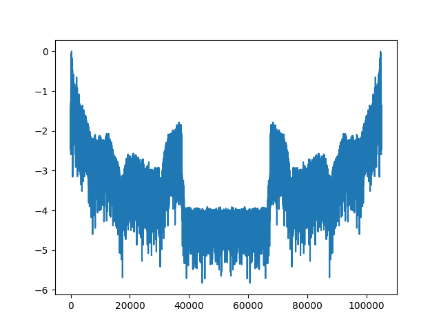

Travail sur le son⚓︎
Préambule⚓︎
Extraction de l'audio d'une vidéo
Cela se fait très facilement en ligne de commande dans le terminal.
On utilise pour cela le logiciel de lecture et d'encodage vidéo ffmpeg.
Pour l'installer:
$ sudo apt install ffmpeg
Pour l'utiliser, lire par exemple ici. Penser à extraire l'audio au format wav.
Lecture d'un son numérique⚓︎
Récupération des données
Pour lire un fichier son au format wav, on utilisera le module:
import scipy.io.wavfile as wave
La fonction read du module wave permet de récupérer la fréquence d'échantillonnage (nommée rate dans l'exemple suivant) ainsi que l'échantillon des valeurs du signal représentant le son sur 16 bits.
rate, echantillon = wave.read('son.wav')
On récupère dans echantillon un tableau d'éléments [cg, cd] où cg est la valeur du canal gauche et cd celle du canal droit. Le signal d'un canal est représenté ci-dessous.

Calcul du volume en dBA⚓︎
Spectre
Le volume, en dbA, s'obtient par un traitement du signal pour obtenir le spectre du son:

Ce traitement s'effectue par la fonction donnée ci-dessous qui nécessite l'utilisation du module numpy ainsi que du module math:
import math
import numpy as np
def spectre(data: list, rate: int, debut: float, duree: float) -> list:
'''
Renvoie le spectre correspondant à un intervalle du signal.
data: le signal d'un canal
rate: la fréquence d'échantillonnage
debut: le début de l'intervalle à étudier (en secondes)
duree: la durée de l'intervalle à étudier (en secondes)
'''
start = int(debut * rate)
stop = int((debut+duree) * rate)
s = np.absolute(np.fft.fft(data[start:stop]))
s = s / s.max()
return [math.log10(i) for i in s if i != 0]
Donnée à extraire
- Pour chaque intervalle de durée 1/25e de la durée totale du son, vous devez calculer le volume minimal de la liste fournie par la fonction
spectre. Cela vous donne une liste de 25 valeurs. - Dans cette liste, vous extrayez le minimum et le maximum, puis vous exprimez chaque valaur en pourcentage de la plage min-max.
Exemple:
Pour un son donné, on obtient les 25 volumes minimaux suivants:

Le minimum de la liste est -7.24 et le maximum est -5.28. Le volume d'indice 2 est -5.96, il est situé à 65% de l'intervalle [-7.24, -5.28].
- C'est ce pourcentage (65%) qui est la valeur à extraire pour chaque intervalle du son (\(V_{son}\) ou \(V_{video}\)).